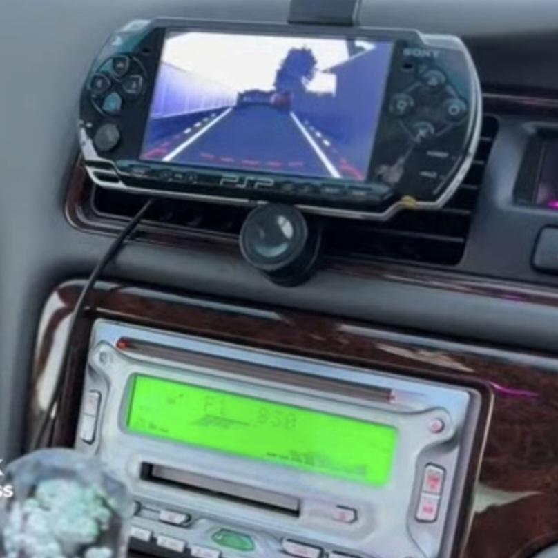

About Us
We are Bando Mods. Our goal is to bring nostalgia back to fruition. we restore and modify classic technology such as PSPs, MP3 players, and car stereos.
Looking for inspiration?
Example builds and community showcases.


Mod of the Month
Community spotlight placeholder

A sure highlight! this user is utilizing his modded psp as a GPS! a sure standout within the modification community.
Our Mission
Innovation and restoration

this is but one example of how we take powerless old tech, improve upon its capability with modern hardware, and make it easy enough so YOU can work on it the way you'd like. like how we took this old walkman, converted it to english, and made it compatible with windows 11 to add music.
Mods is more than a place to buy, its a place to invite creativity. The community contributes ideas, projects, and feedback to improve the products and mods.